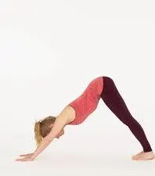

Pose 1: Downward-Facing Dog (Adho Mukha Svanasana)

Description: This pose stretches the shoulders, hamstrings, calves, arches, and hands. It also strengthens the arms and legs.
Pose 2: Child's Pose (Balasana)

Description: This is a restful pose that stretches the hips, thighs, and ankles while reducing stress and fatigue.
Pose 3: Cobra Pose (Bhujangasana)

Description: This pose opens the chest and strengthens the spine, arms, and shoulders.